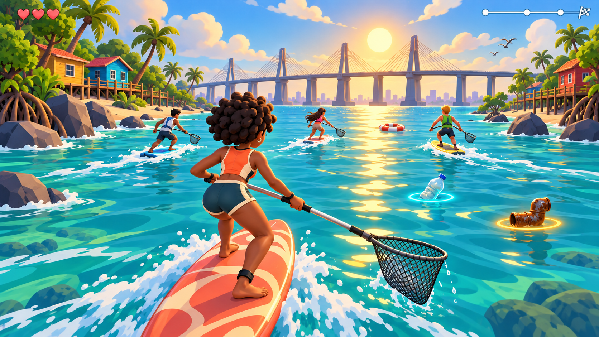

COMPUNUBE / DEL BOCETO AL JUEGO / PASE 08
La misma ola, más carácter.
Cuatro surfistas, agua pintada y luz desde el puente: revisión del conjunto visual.
Preparando escena…

Los cuatro surfistas tienen modelos y ropa propios. “Composición” reúne a Amara, Nico, Luna y Samuel con las tablas, red, postura y estelas de la carrera. En “Ver el club” puedes compararlos de frente y espalda y revisar el cambio de red. “Amara anterior” muestra el personaje del pase 06 bajo la luz y cámara actuales. “Orilla de cerca” permite revisar el paisaje pintado. “Volumen” sigue siendo un ensayo de este estudio. La ilustración continúa siendo la referencia de acabado; estas vistas no modifican el perfil ni conceden materiales.